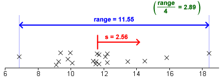
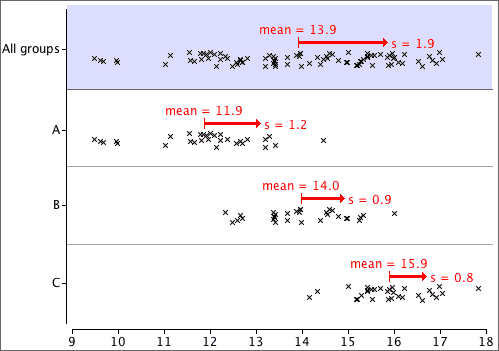
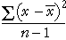

If you don't want to print now,
Summarising centre and spread
Two important aspects of a distribution of values are particularly important.
We will describe centre and spread with numerical values called summary statistics. They provide particularly concise and meaningful comparisons of different groups.
Simple summaries of centre and spread
Information from median and interquartile range
Given the median and interquartile range, it is possible to sketch a bell-shaped histogram that matches these values. Such a 'guess' is often close to the actual distribution of values.

Median
Half of the data values are below the median and half are above it:

Mean
The mean is:

If each value in a dot plot was a solid object resting on a beam with negligible mass, the mean is the value at which the beam will balance.

The standard deviation is denoted by the letter s and is defined by:

The numerator,  , depends on the distances of the values to the mean, so it will be small if the values are all close to the mean and big if they are far from the mean.
, depends on the distances of the values to the mean, so it will be small if the values are all close to the mean and big if they are far from the mean.
Variance
The square of the standard deviation, s2, is called the sample variance. Variances are sometimes reported and used but standard deviations are easier to interpret since they have the same units as the original data (e.g. kilograms or dollars).
'Quarter-range' rule of thumb
For many data sets, the standard deviation is just under a quarter of the range.
|  |
This is a simple rule, but is only very approximate. The standard deviation can be more than a quarter the range in distributions with short tails or much less if there are long tails or outliers.
The 70-95-100 rule of thumb
The 70-95-100 rule is more accurate. In many distributions,
The 70-95-100 rule holds approximately for most reasonably symmetric data sets, but for skew data or distributions with long tails, outliers or clusters, it is often less accurate.
Understanding the definition of the standard deviation is much less important than knowing its properties and having a feel for what its numerical value tells you about the data.
Guessing s from histogram
About 95% of the values should be within 2s of the mean, so after dropping the top 2.5% and bottom 2.5% of the values (histogram area), the remainder should span approximately 4s. Dividing this range by 4 should approximate the standard deviation.

Sketching a histogram from the mean and s
Similarly, you should be able to draw a rough sketch of a symmetric histogram with any mean and standard deviation that you are given. (It would be centred on the mean and 95% of the area would be within 2s of this.)
The shape of a distribution
| The mean and standard deviation hold no information about the shape of a distribution, other than its centre and spread. |
Many different distributions have the same mean and standard deviation.

More generally,

where the summation is over the distinct values in the data set, rather than all individuals.
Calculating the standard deviation
A similar formula holds for the standard deviation, using the formula

Within-group and overall standard deviation
In some data sets, the 'individuals' can be split into groups.

The overall variance of all values (ignoring groups) is the total sum of squares divided by (n - 1).

Variation between groups is summarised by the differences between the group means and the overall mean. Note that the summation is over all observations in the data set.

This is also called the residual sum of squares since it describes variability that is unexplained by differences between the groups. Note that the pooled estimate of the common variance, σ2, is the sum of squares within groups divided by (n - g).

Sums of squares
| Sum of squares | Interpretation |
|---|---|
| Overall variability of Y, taking no account of the groups. | |
| Variability that cannot be explained by the model. | |
| Variability that is explained by the model. |
Coefficient of determination
The proportion of the total sum of squares that is explained by the model is called the coefficient of determination,

Example

The numerators in these ratios add up:
SSTotal = SSBetween + SSWithin
and the same relationship holds for their denominators (degrees of freedom):
dfTotal = dfBetween + dfWithin
F ratio and p-value
The test statistic is an F-ratio,

This test statistic compares between- and within-group variation. The further
apart the group means, the larger SSBetween and the larger the F-ratio.
Large values of F suggest that H0 does not hold — that the group means are not the same.
The p-value for the test is the probability of such a high F ratio if H0 is true (all group means are the same). It is based on a standard distribution called an F distribution and is interpreted in the same way as other p-values.
The closer the p-value to zero, the stronger the evidence that H0 does not hold.
Analysis of variance table
An analysis of variance table (anova table) describes some of the calculations above:
Variance
variance = (standard deviation)2 = 
The units of the variance are the square of the units of the original values. For example, if the values are weights, the standard deviation might be 6 kg, but the variance would be 36 square kg. Since its units are easier to interpret, standard deviations are more easily understood measures of spread, but variances are important in advanced statistics. (An important collection of methods for analysing relationships between variables is called analysis of variance.)
Degrees of freedom (optional)
The divisor (n − 1) in the formula for the sample standard deviation is called its degrees of freedom. This is the number of 'independent pieces of information' that contribute to it.
Distance of values from a target, k
The distance of a single random value from a target is called its error.

Root mean squared error
One solution to the problem of negative errors is to square them before averaging,
mean squared error = 
To express this in the original units of the data (instead of units such as squared kg), we can take its square root:
root
mean squared error = 
The root mean squared error is a 'typical' error.
Distances from the centre of the distribution
The population standard deviation is similar to the root mean square error but summarises the distances of the values from the centre of their distribution. It summarises the spread of values in the data.
population standard deviation = 
This can be illustrated graphically — the squared standard deviation is the average of the squared distances of values to their mean:

Standard deviations in reports are likely to be sample standard deviation.